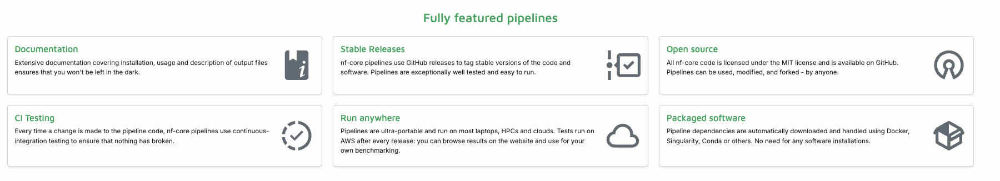

nf-core

nf-core tools
nf-core -h
nf-core list rna
nf-core list rna -s starsOr you could just look at the website nf-core/pipelines

nf-core launch nf-core/rnaseq- use the arrow keys to select version ‘3.14.0’ , press enter
- use the arrow keys to select ‘Web based’
- LOTS of TEXT to FILL OUT here
- if we have time at the end can go through other pipelines in more details if anyone has specific questions
scp